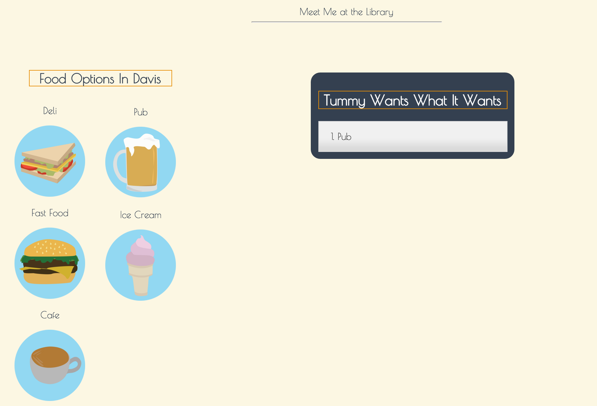
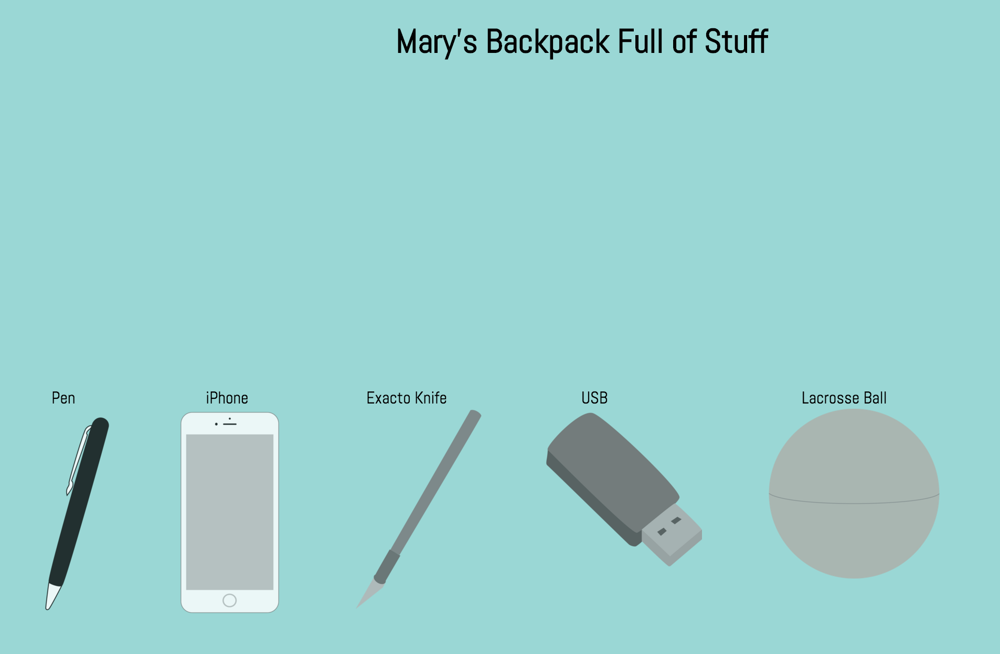
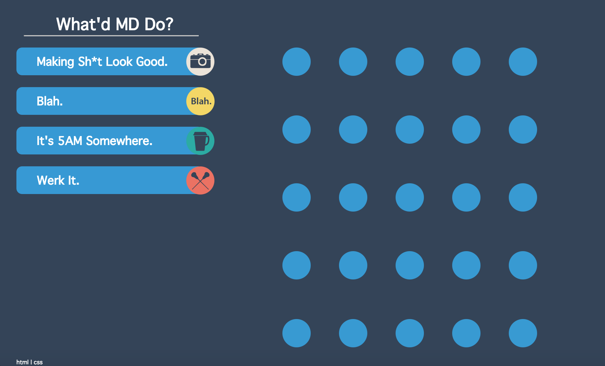
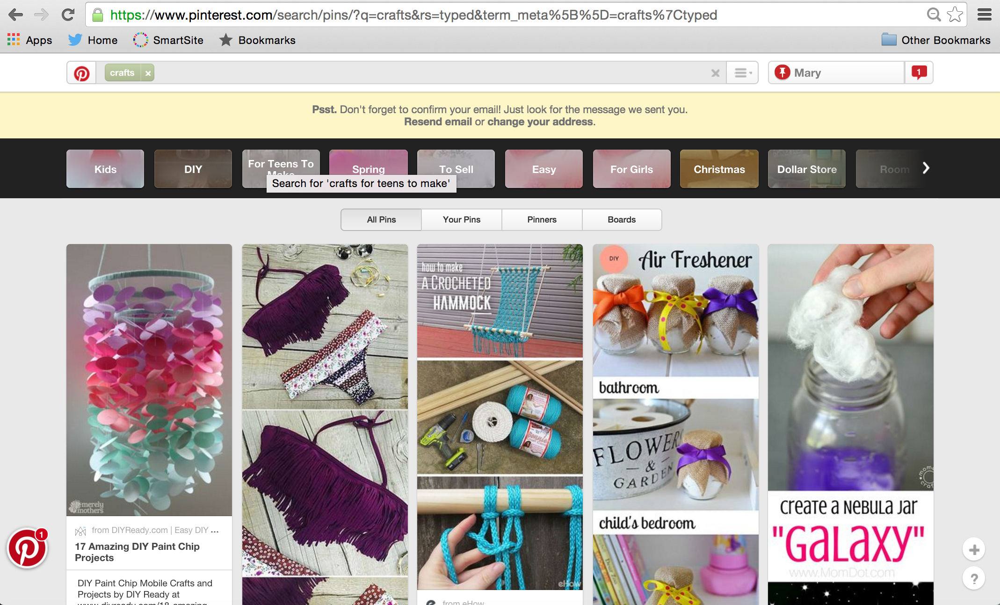
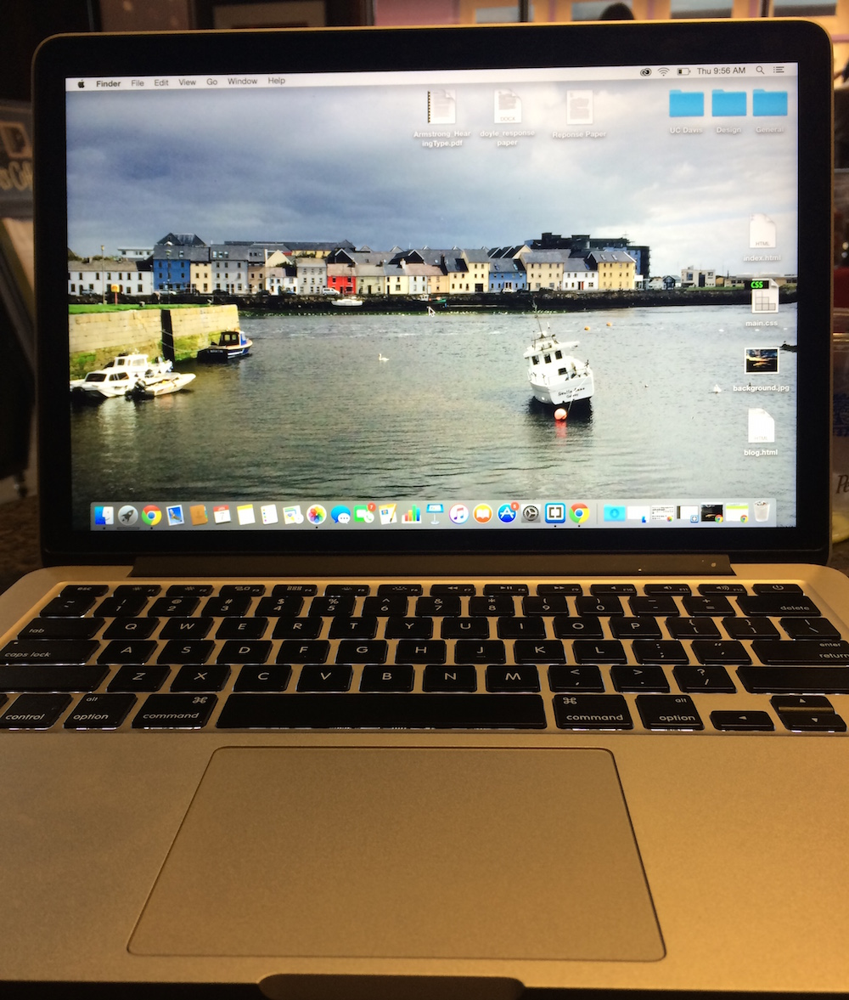

hello
Meet Me at the Library | 2.11.2016
JQuery UI, Draggable and Droppable
I began this process by looking at what my project would need to be successful. Also, I wanted to choose a library in which I could actually understand the code and not just simply plug in. Therefore, I ended up choosing the JQuery UI library, specifically Draggable and Droppable. There is basically a bunch of different food options in Davis, so I wanted to create a "shopping cart" in which you could drag items to a folder like containter which would store the information. However, the difficulties I had and continue to have, is how ot take an item out of the bag. However, I was able to manipulate the code myself and figure out many other approaches, which makes me happy and proud! I'm excited to continue the process and see how my final project draws from this exercise.

What's In Your Pocket | 2.3.2016
Animation and Photos
When starting this project I knew two things. One I knew that I honestly didn't have much time to work unfortunately and two I had to keep it simple, so I could understand the code. When organizing all my photos together I knew I wanted to draw them in illustrator because the pictures therefore resemble me better and what they mean to me. Also I felt like I could make the five random items be more integrated. Lastly, when hovering I wanted there to be a color chnage that would fade in and out with ease. When clicking the header a div tag would appear which would add more information to the pictures.

What'd MD Do | 1.28.2016
Design and Content
When creating my interface which would include my schedule for five hours, I wanted to create something simple, engaging, and fun. A lot of times when I am designing I tend to overcomplicate my design, or spend so much time on one small component and then the rest suffers. However, in this assignment I think it is simple to use, yet the jQuery is used effectively, and makes the interaction more fun. Also, the color scheme, typeface, and pictograms captivates the audience to make the website a better user experience as well. I also spent some time making the actual snipits interesting to read and funny, which also makes viewing the page fun and entertaining.

Evaluating Pinterest | 1.19.2016
When looking for design inspiration or different crafts to do on the weekend, I often find myself on Pinterest. According to Bill DeRouchey's design principles, Pinterest's site works effectively. There is a clear hierarchy of different elements. At the top you have a clear search bar. Nested underneath you have the different tabs you can pick to narrow down the search. However, these tabs are very friendly, inviting, and iconic, making the website easy to manage. Underneath these tabs are the actual results which are organized in columns and rows. This layout follows DeRouchey's guidelines of the interface communicated with the audience effectively. There is clarity. There is simplicity. The words, icons, and colors all interact effectively together, creating an effective an informative design. Because I use this site all the time it makes viewing everything simple and easy, almost relazing.

Evaluating an Interface | 1.7.2016
I use my MacPro for around 6 hours a day, mostly consisting of classwork and homework. At any given time, GoogleChrome, an Adobe program, or Brackets, is running (expect the rare occasions I might actually turn my computer off.) One of the best features of Apple products, specially the MacPro interface, is the simplicity. Each app logo is clean and clear, nicely situated at the bottom or side of your screen, either visible or hidden. The user is allowed to change icons, customizing even the home dashboard to their liking by simply dragging and dropping. The simplicity allows effective communication between the user and the interface, which adds to the products overall appeal. Despite there being a millions different options and settings for the computer, the design makes it feel like there are only a few to choose from, allowing the user to never feels overwhelmed. Overall the MacPro’s ability to simplify and condense an abundance of information and display it in a clean, effective manner proves its dominance as a great interface.
